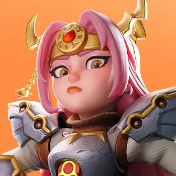
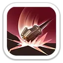
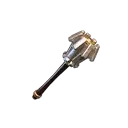
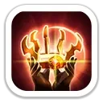

Пылающий щит
Щит · отражение · массовый уронСоздаёт щит прочностью от атаки Элеоноры и отражает 30% получаемого урона. Через 3 секунды щит разрушается и наносит урон ближайшим врагам.
Щит 100 / 130 / 160 / 190 / 220% · взрыв 60 / 65 / 70 / 75 / 80%

Фронтовик · щиты · усиление живучести всего марша
Элеонора — пехотный герой 11 поколения и главный F2P-приоритет поколения благодаря Колесу удачи. Она создаёт мощный щит, отражает часть входящего урона, снижает защиту цели и в Экспедиции усиливает здоровье всего марша, пехоту и стрелков.
Максимальные значения героя по актуальным карточкам источников.
Элеонора сочетает щит, отражение урона, снижение защиты цели и постоянное усиление собственной живучести.
Создаёт щит прочностью от атаки Элеоноры и отражает 30% получаемого урона. Через 3 секунды щит разрушается и наносит урон ближайшим врагам.
Щит 100 / 130 / 160 / 190 / 220% · взрыв 60 / 65 / 70 / 75 / 80%

Наносит удар тяжёлым молотом и снижает защиту цели на 2 секунды.
Урон 100 / 110 / 120 / 130 / 140% · защита цели −10 / 15 / 20 / 25 / 30%
Одновременно снижает получаемый Элеонорой урон и повышает наносимый ею урон.
−5 / 7,5 / 10 / 12,5 / 15% получаемого · +5 / 7,5 / 10 / 12,5 / 15% наносимого
Очень сильный набор для живучего смешанного марша: здоровье всем войскам, защита пехоты и усиление стрелков.
Повышает здоровье всех войск.
+5 / 10 / 15 / 20 / 25%
Снижает получаемый пехотой урон и одновременно повышает наносимый стрелками урон.
Пехота: −2 / 4 / 6 / 8 / 10% урона · стрелки: +2 / 4 / 6 / 8 / 10% урона
Каждые 5 атак пехоты на 2 хода усиливает урон всех войск и одновременно снижает получаемый ими урон.
+5 / 10 / 15 / 20 / 25% урона · −5 / 10 / 15 / 20 / 25% входящего урона

Максимальные бонусы: +2 308 атаки, +3 010 защиты, +45 157 здоровья героя, +320% смертоносности и +320% здоровья войск.

Один из сильнейших фронтовиков поколения: щит, отражение урона, взрыв по области и снижение защиты цели.
Сильна в затяжных боях благодаря +25% здоровья всему маршу и мощным циклическим баффам.
Очень хороша за счёт высокой живучести, защитного эксклюзивного навыка и усиления здоровья защитников.
Не лучший герой для вступления в чужой сбор: первый навык Экспедиции повышает здоровье, а не урон. Как лидер сильного собственного марша полезнее.
Элеонора — главный F2P-герой 11 поколения и один из самых сильных фронтовиков своего этапа игры. Колесо удачи делает её доступнее Ллойда и Руфуса, а набор из щитов, здоровья, снижения входящего урона и командного усиления позволяет долго держать переднюю линию в PvP, гарнизоне и Арене.